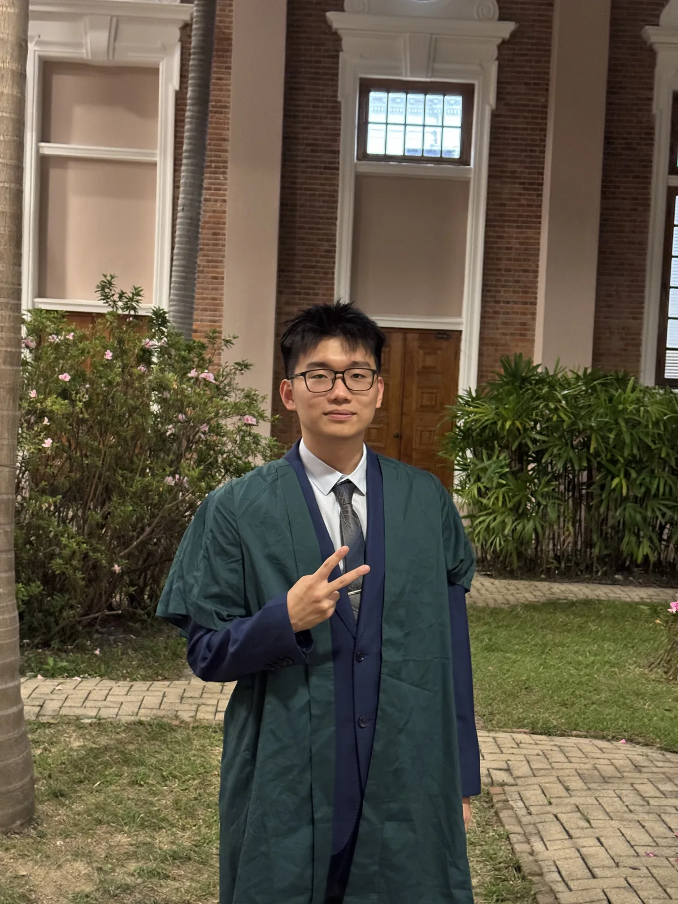

About
Not a résumé. A story.

我叫葛家羽（Ge Jiayu），在海南海口长大，目前在香港大学计算与数据科学学院读大二，走 AI & Data Science 方向。
I grew up in Haikou, Hainan. Now a sophomore at HKU's School of Computing and Data Science, on the AI & Data Science track.
我花了三年从理科实验班的底部爬出来，用全省前 0.3% 的成绩换了一张去香港的离场券——不是为了逃离，是为了走向更自由的可能性。我做过项目助理，操盘过三场大型赛事；在投资机构见过真实的商业世界。拿过专利，赢过竞赛，踢过冠军，甩掉过 18 公斤。没有一个标签能单独定义我，但合在一起，它们就是我的形状。
Three years to claw back from the bottom of an elite science class. Top 0.3% in the province bought me a ticket to Hong Kong — not to escape, but to walk toward something freer. I've run large-scale events, sat in an investment firm, filed a patent, won competitions, captained a champion football team, and dropped 18 kilos through discipline. No single label defines me. Together, they trace the shape of who I'm becoming.
我不在一个框架里寻找身份。我在行动中认识自己。
I don't find identity in a box. I find it in motion.
做事稳，响应快。习惯把复杂任务拆成可执行的步骤，保持节奏，注重交付。遇到不会的就学——这是我高中三年学到的最重要的事。
Steady hands, fast response. I break complexity into executable steps, keep the rhythm, and care about what gets delivered. When I don't know something, I learn it — that's the most important skill high school taught me.
现场统筹、跨方沟通、AI 工具链（从大语言模型到 vibe coding 到数字人制作）——这些不是简历上的关键词，是我实际用过的能力。编程和数据分析在持续进阶，但我不夸大。我的核心武器不是技术栈，是学习力 × 执行力。
Event ops, cross-stakeholder communication, the AI toolchain — from LLMs to vibe coding to digital avatars — these aren't buzzwords, they're things I've actually done. Programming and data analytics are works in progress, and I'm honest about where I stand. My real edge isn't a tech stack — it's learning speed multiplied by execution.